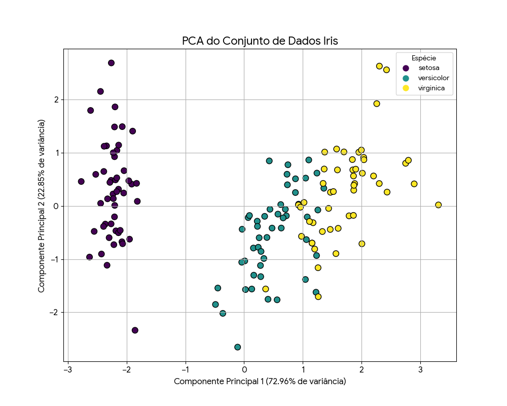

Gabriela Castro Martins e Rodrigo de Quadros Sant'Anna
É uma técnica estatística que busca resumir dados sem perda de informações. o PCA trabalha para identificar novas variáveis, chamadas de componentes principais, que são combinações lineares das variáveis originais. Essas novas variáveis são criadas de forma a capturar a maior parte da variação dos dados originais.
Imagine que você tem um banco de dados com centenas de colunas(variáveis) e muitos desses dados podem estar correlacionados, variando juntos. O PCA é utilizado nesses casos, onde:
Digamos que você está fazendo uma análise no dataset "Iris" do R que mostra o tamanho de 3 espécies de flores. Nesse dataset temos 5 variáveis no total(Sepal.Length, Sepal.Width, Petal.Length, Petal.Width e Species). É de se imaginar que algumas variáveis possam estar correlacionadas por todas se tratarem de medidas de tamanho, em exceção a variável 'Species' que vamos utilizar para categorização.
Para utilizar o PCA vamos pegar as 4 variáveis de medida para análise da variância, assim obtendo o seguinte resultado:
Como os componentes principais consistem em combinações lineares das variaveis, existe uma forte suposição de linearidade no PCA. Por conta disso, em dados altamente não lineares o PCA pode falhar em capturar adequadamente a estrutura, resultando em uma representação inadequada e perda de informação.
Por buscar maximizar a variância dos dados em cada componente principal, o PCA se torna altamente sensivel a escala dos dados. Variáveis com escalar maiores terão prioridade sobre variáveis com escala menores mesmo quando isso não define necessariamente a importancia real das mesmas. Por conta disso, o PCA se torna sensivel também a outliers, que podem influenciar a variância dos dados de maneira desproporcional, distorcendo os componentes principais. Por conta disso é importante padronizar os dados.